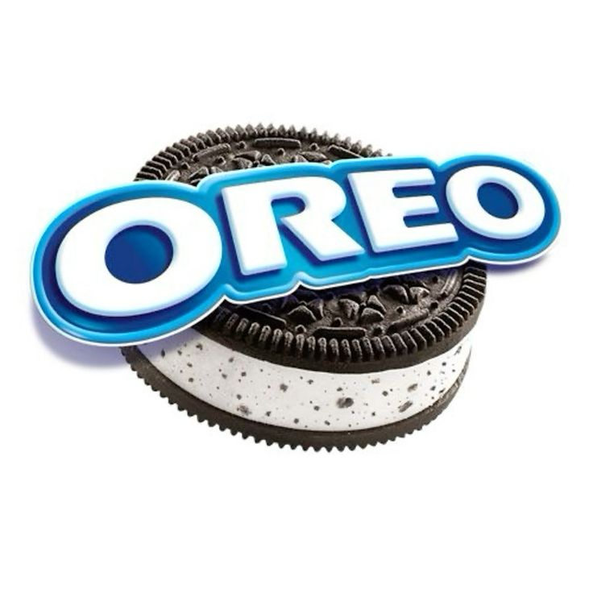
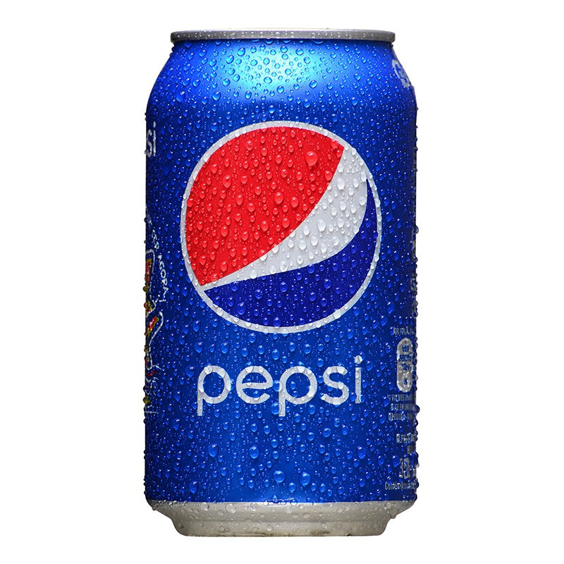
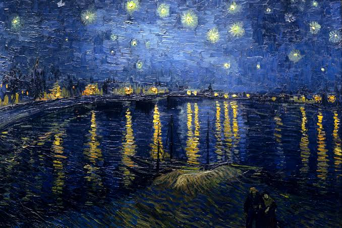
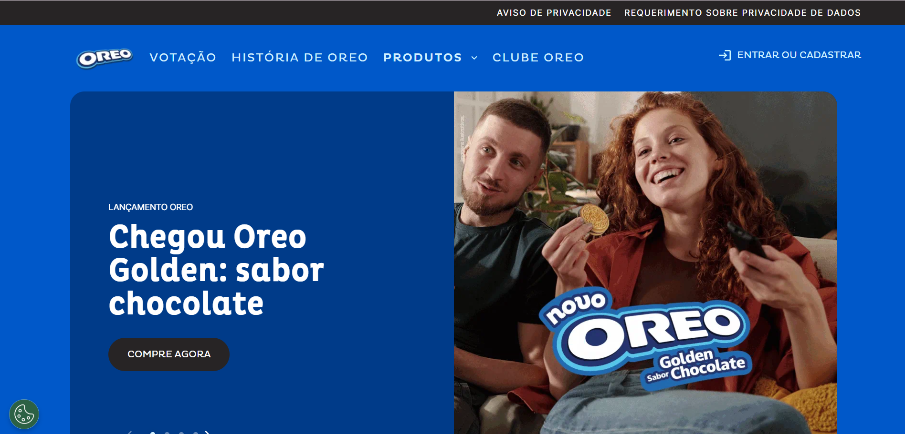

Significado:
A cor azul tem como significado a tranquilidade, serenidade, confiança e espiritualidade, estando fortemente associada ao céu e à água
Variações das cores em azul!
Tons claros:
Azul Celeste
Azul Céu
Azul Ilusão
Tons escuros:
Azul Marinho
Azul Noite
Azul Prússia
Tons pastéis:
Azul Bebê
Azul Serenity
Azul Névoa
Tons mais saturados:
Azul Royal
Azul Cobalto
Azul Elétrico
Combinações com outras cores:
Azul Turquesa (Azul + Verde)
Azul Petróleo (Azul + Verde Escuro)
Azul Violeta (Azul + Roxo)
Paleta que criamos!
Cor principal (Azul)
Cor Secundária (Azul claro)
Destaque (Ciano escuro)
Fundo (Off-White)
Texto (Preto)
Códigos hexadecimais!
Azul
#58afdd
Azul claro
#8dcfec
Ciano escuro
#006666
Off-White
#f2f0ef
Preto
#000000
Marcas!



Significado cultural!
reside na sua transição de um pigmento extremamente raro e valioso, que rivalizava com o ouro, a um poderoso símbolo espiritual, político e emocional
Um exemplo

A cor azul na História da Arte - ArtRef

Um personagem com a cor azul!
Um site!
